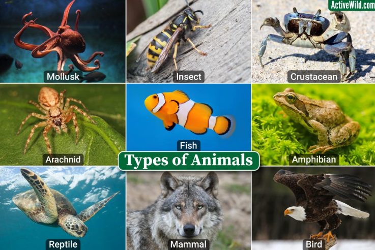

Типи тварин
На планеті Земля є багато різних видів тварин, але поговоримо мі сьогодні про основні.
1-ий тип це Ссавці (Mammalia) — клас хребетних тварин, основною відмінністю яких є живонародження і вигодовування дитинчат молоком. Представників загонів ссавців серед хребетних вважають найбільш високоорганізованими тваринами. Від інших хребетних ссавців відрізняються живонародженням (крім представників загону однопрохідних, або яйцекладних, наприклад: качконіс і єхидна), теплокровністю (виняток становить голий землекоп), наявністю волосяного покриву, високим рівнем розвитку нервової системи та деякими іншими ознаками.
2-ий тип це - Птахи. Характерними рисами сучасних птахів є наявність пір'я, дзьоба без зубів, відкладання яєць з міцними оболонками, високий рівень метаболізму, чотирикамерне серце, легкий міцний скелет. Усі сучасні птахи мають крила, що розвинулися з передніх кінцівок. Винятком є нещодавно вимерлий птах моа з Нової Зеландії. Більшість птахів здатні до польоту, до нелітаючих належать страусоподібні, пінгвіни та невелика кількість ендемічних острівних видів. Птахи також мають пристосовану до польоту травну і дихальну системи. Деякі види, зокрема воронові та папуги, належать до тварин із найрозвиненішим інтелектом, здатних застосовувати знаряддя для добування їжі. Багато птахів уміють передавати індивідуальний досвід між поколіннями.
3-ий вид це Рептилії (Reptilia) – тварини, що знаменують собою розрив прямої залежності від водного середовища і перехід до цілком наземного існування. Освоєння рептиліями суші відбулося завдякизміні способу розмноження: замість ікринок, з яких з’являються рибоподібні личинки, рептилії здебільшого відкладають яйця, вкриті щільною захисною оболонкою і забезпечені запасом поживних речовин, що дає можливість уникнути личинкової стадії.Проте серед них є чимало видів, що ведуть водний спосіб життя, часто вони зовсім безпорадні на суші – це і крокодили, і морські черепахи, і морські змії.
4-ий вид це Земноводні, або Амфібії (Amphibia), — найменший за кількістю видів (близько 6 тисяч) клас наземних хребетних (Tetrapoda). В Україні мешкає 20 видів. У процесі еволюції стали першими наземними хребетними.Це перші наземні хребетні, котрі зберігають тісний зв'язок з водним середовищем. Розмножуються у воді (у частини видів, зокрема в поширеної в Карпатах саламандри, відоме яйцеживородіння). У процесі індивідуального розвитку земноводні проходять стадію водної личинки, що дихає зябрами. У дорослих, окрім легень, як додаткового органу дихання використовується шкіра, вкрита слизом, що також засвідчує їхній тісний зв'язок з вологими біотопами.
5-ий вид це Риби (Pisces) — парафілетична група водних хребетних тварин, зазвичай холоднокровних (точніше екзотермних) із вкритим лусками тілом та зябрами, наявними протягом всього життя. Активно рухаються за допомогою плавців (часто видозмінених) або руху всього тіла. Риби поширені як у морських, так і в прісноводних середовищах, від глибоких океанічних западин до гірських струмків. Риби мають велике значення для всіх водних екосистем як складова частина харчових ланцюгів та велике економічне значення для людини через споживання їх у їжу. Люди як виловлюють диких риб, так і розводять їх у створених з цією метою господарствах.